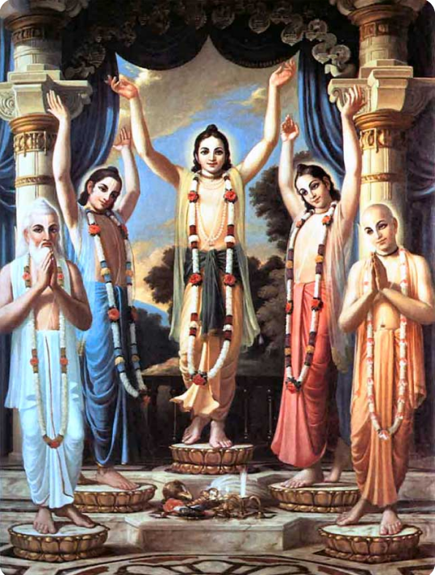

<section>
  <div class="container">
    <div class="d-flex wapper justify-content-between">
      <div class="pachtatva">
        <figure>
          
        </figure>
      </div>
      <div class="iskcon">
        <h2>ISKCON - INTERNATIONAL SOCIETY FOR KRISHNA CONSCIOUSNESS</h2>
        <strong>Founder Acharya:<span> His Divine Grace A.C. Bhaktivedanta Swami Prabhupada.</span></strong>
        <p>One of the most visible of all the new spiritual movements that came from the East in the 1960s and 70s and
          spread its roots worldwide within a short span is The International Society for Krishna Consciousness
          (ISKCON). ISKCON is a modern movement within the monotheistic Gaudiya Vaishnava tradition dating back 5000
          years to Lord Krishna Himself.</p>
        <p>Sri Chaitanya, a spiritual revolutionary of the 15th Century established the congregational chanting of the
          holy names of Lord Krishna especially the Hare Krishna Mahamantra. His Divine Grace A.C. Bhaktivedanta Swami
          Prabhupada (Srila Prabhupada), an Acharya in the same lineage established ISKCON in the West in 1966 following
          the orders of his spiritual master, Srila Bhaktisiddhanta Saraswati, to spread the message of Lord Chaitanya
          in the western world. ISKCON gained further publicity through the interest of the Beatle George Harrison.
          Since then ISKCON has developed into a worldwide confederation of over 500 temples, centers, farm communities,
          schools, and restaurants.</p>
        <p>The mission of this non-sectarian, monotheistic movement is to promote the well-being of society by teaching
          the science of Krishna consciousness according to Bhagavad-Gita and other ancient scriptures like Srimad
          Bhagavatam.</p>
      </div>
    </div>


    <div class="Purposes-of-iskcon">
      <div class="purpose-deatail">
        <h2>The 7 Purposes of ISKCON formulated by Srila Prabhupada, the Founder Acarya of ISKCON are</h2>
        <ul class="list-of-purposes">
          <li>
            <p>To systematically propagate spiritual knowledge to society at large and to educate all people in the
              techniques of spiritual life in order to check the imbalance of values in life and to achieve real unity
              and peace in the world.</p>
          </li>
          <li>
            <p>To propagate a consciousness of Krishna (God), as it is revealed in the great scriptures of India,
              Bhagavad-gita and Srimad Bhagavatam.</p>
          </li>
          <li>
            <p>To bring the members of the Society together with each other and nearer to Krishna, the prime entity,
              thus developing the idea within the members and humanity at large, that each soul is part and parcel of
              the quality of Godhead (Krishna).</p>
          </li>
          <li>
            <p>To teach and encourage the Sankirtan movement (congregational chanting of the holy name of God), as
              revealed in the teachings of Lord Sri Chaitanya Mahaprabhu.</p>
          </li>
          <li>
            <p>To erect for the members and for society at large a holy place of transcendental pastimes dedicated to
              the personality of Krishna.</p>
          </li>
          <li>
            <p>To bring the members closer together for the purpose of teaching a simpler, more natural way of life.</p>
          </li>
          <li>
            <p>With a view towards achieving the aforementioned purposes, to publish and distribute periodicals,
              magazines, books and other writings.</p>
          </li>
        </ul>
      </div>
    </div>
  </div>
</section>
